Здесь представлены проекты по проектированию внутренних сервисов интернет-магазина МегаФон, которые направлены на ускорение time-to-market, решение рутинных бизнес-задач и оптимизацию ежедневных процессов: публикация, обработка, редактирование контента сайта интернет-магазина, управление заказами.
Админки, которые убрали из рутины сотрудников ожидание разработчиков и устаревшие программы. Контент-менеджеры теперь сами публикуют лендинги и меняют каталог, а модераторы обрабатывают отзывы в одном окне.
Продуктовый дизайнер. Вела проекты от анализа задачи до релиза: бенчмарк, исследования, сценарии, макеты, спецификации, дизайн-ревью
Пользователи
Сотрудники (менеджеры, модераторы)
Дизайн-система
Была
Платформа
Web Desktop
Проект 1. С нуляКонструктор лендингов. Промо-страница за пару часов вместо пары недель
Контекст
На сайте интернет-магазина публикуется примерно 10–15 промо-страниц в месяц: акции, страницы брендов-партнёров, новости. Каждая проходила одну и ту же цепочку: контент-менеджер ставил задачу дизайнеру, тот собирал макет в Figma, затем макет уходил в вёрстку к фронтенд-разработчику. От задачи до публикации проходило около 2 недель
Боли контент-менеджера
Срок публикации зависел от загрузки разработки
Чтобы внести изменения (поправить дату акции или опечатку), нужна была новая задача
Акция могла начаться раньше, чем появлялась её страница
Что терял бизнес
Акции иногда запускались с опозданием, маркетинг терял продажи. Разработчики тратили время на типовую вёрстку вместо развития продукта
Задача
В административной панели (CMS) добавить раздел для сборки лендингов и других промо-страниц с возможностью публикации на сайте в один клик
Ограничения
Технически нельзя было сделать функцию редактирования прямо в превью (inline-редактирование). Пришлось искать другой способ редактирования контента
Все блоки должны поддерживаться в коде и следовать дизайн-системе
Страница должна корректно выглядеть на десктопе, планшете и телефоне
Контент-менеджер — не дизайнер. Полная свобода сломала бы единый стиль сайта
Discovery
Проанализировала структуру лендингов на сайте
Составила список наиболее часто повторяющихся блоков и их назначение. Например: баннер, шаги, преимущества, подборка товаров, текст. Так появился список из 20+ компонентов
Бенчмарк
Изучила конструкторы и админки конкурентов: Озон, Т-Банк. Посмотрела, как в них устроены выбор блоков, настройки и превью. Составила сравнительную таблицу по функционалу. Определили с командой, что берём/не берём
Провела созвон с контент-менеджерами
Узнала, какие страницы они делают чаще всего и какие правки вносят после публикации. Главный вывод: чаще всего меняют тексты и сроки акции, а не структуру. Также менеджеры публикуют большое количество текста, значит, должен быть удобный инструмент для работы с текстом
Дизайн-решение
1.
Три колонки: выбрать — увидеть — настроить
Интерфейс повторяет порядок действий менеджера: слева — список блоков. Менеджер добавляет блоки и меняет их порядок; в центре — превью страницы; справа — настройки выбранного блока: текст, размеры, отступы, цвет
Как обошли ограничение. Редактировать прямо в превью было нельзя. Поэтому по клику на блок в превью справа открываются его настройки, а блок подсвечивается. Inline-редактирование — следующий шаг развития
2.
Адаптивность
Переключатель сверху показывает страницу на десктопе, планшете и телефоне. Структура страницы и компоненты перестраиваются автоматически, но при необходимости менеджер может настроить их вручную
Плюс. Перенесли в конструктор шрифты и цвета дизайн-системы. Стили шрифтов также меняются под разрешение
3.
Публикация в один клик
Черновик можно сохранить и вернуться к нему позже. Публикация на сайте происходит сразу, без участия разработчика
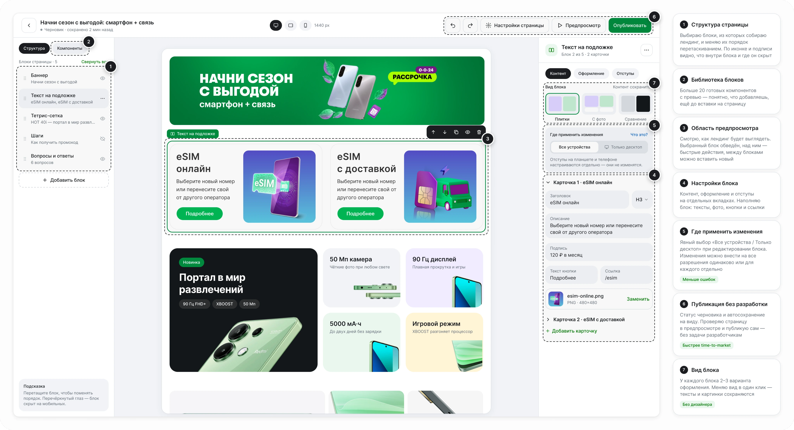
CMS. Раздел «Конструктор лендингов» — стартовая страница
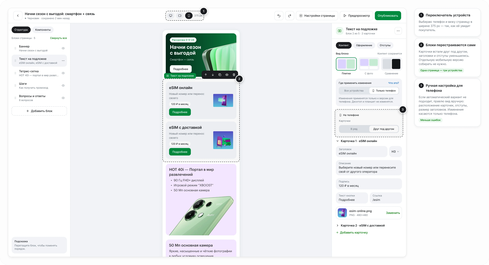
Режим мобильного разрешения
4.
Редактирование текста
Для работы с большим объёмом текста реализована возможность открыть отдельное модальное окно с расширенным функционалом редактирования
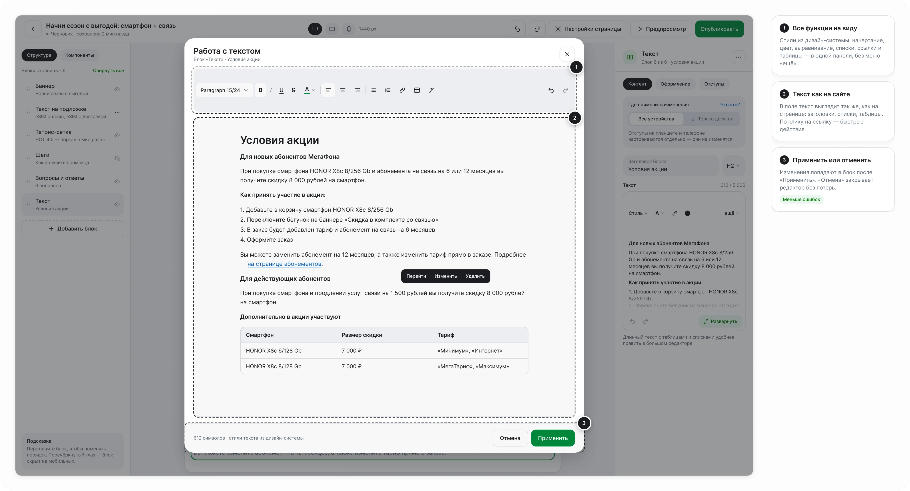
Работа с большим объёмом текста
5.
Библиотека из 20+ компонентов в единой стилистике и шаблоны
Все компоненты отрисованы по дизайн-системе, у каждого есть спецификация и пошаговая логика настройки. Все они реализованы в коде
Для частых страниц: акция, страница бренда, новость — подготовила типовые шаблоны, что сокращает время создания страницы менеджером
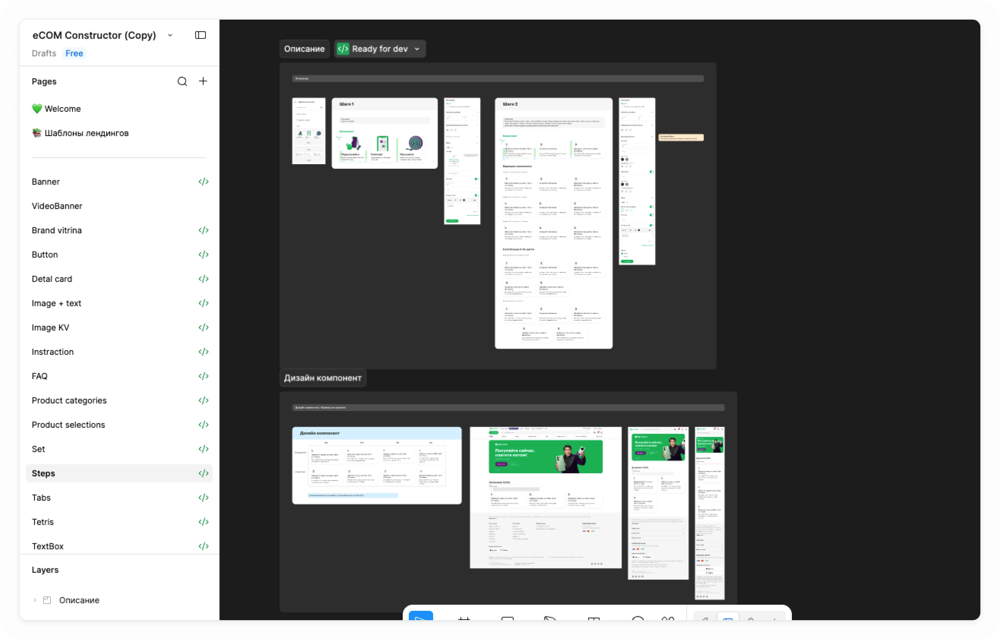
Библиотека компонентов с описанием в Figma
6.
Страницы на сайте
Эти лендинги собраны в конструкторе и опубликованы на shop.megafon.ru
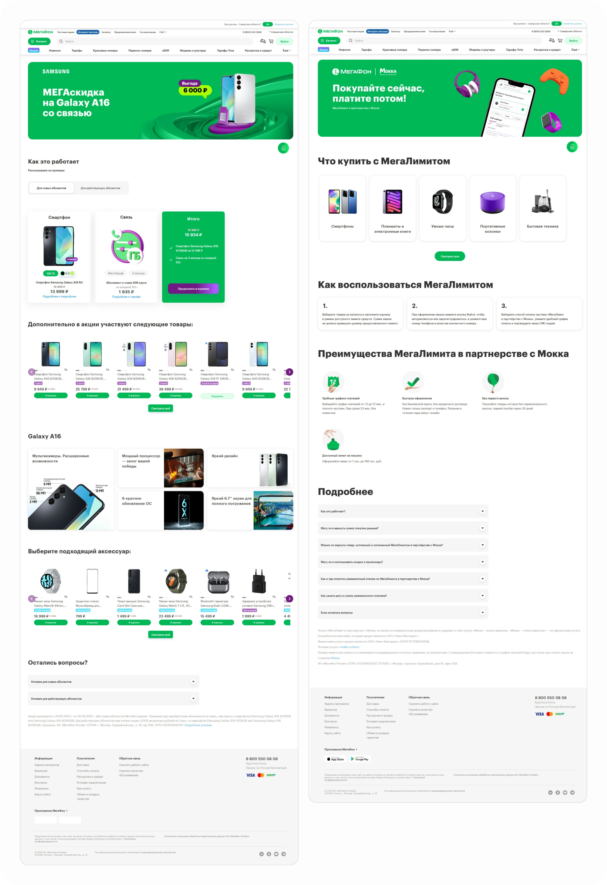
Примеры промо-страниц на проде, собранные на конструкторе
Результат
Сократилось время на публикацию одного лендинга с двух недель до двух часов (примерно)
Разработка освободила ресурс от типовой вёрстки на другие задачи
Что дальше
Inline-редактирование прямо в превью
Проект 2. С нуляЭргономика для модератора. Проектирование админки по модерации отзывов с сайта
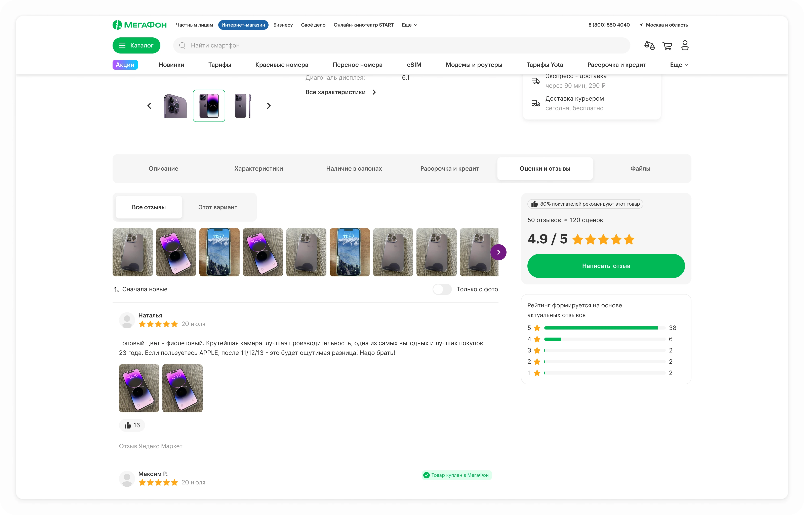
Отзывы в карточке товара на shop.megafon.ru
Контекст
Сейчас отзывы на сайте модерируются в устаревшем ПО, которое не отвечает потребностям ни модератора, ни покупателей. ПО негибкое и не масштабируется: в него нельзя добавить новые функции, которые ускорят и упростят модерацию
Боли модератора
Претензионные отзывы терялись среди обычных. На их обработку есть 2 дня, и срок легко было пропустить
Ручная модерация текста на наличие нецензурных слов. Усталость или невнимательность могли быть причиной ошибок
Ответы покупателям писал с нуля, хотя вопросы повторяются. ПО не имело функционала шаблонов. Модераторы хранили свои шаблоны в Word каждый на своём компьютере
Каждый отзыв обрабатывал по одному — массовых действий не было
Боли пользователя сайта
Нельзя приложить фото или видео, а именно они лучше всего показывают товар. Соответственно, и выбрать товар по фото нельзя
Отзыв или лайк мог оставить кто угодно с любого устройства — непонятно, можно ли верить отзывам
Отзывов мало, особенно на новые товары
Преследуемые бизнес-цели
Снизить затраты на модерацию за счёт ускорения обработки каждого отзыва
В долгосрочной перспективе — увеличение покупок и выручки. Так как хорошо развитый раздел отзывов: фото и видео к товарам, реальные отзывы от покупателей, большое количество отзывов — всё это создаёт доверие к интернет-магазину, мотивирует к покупкам на сайте
Задача
В административной панели (CMS) добавить раздел для модерации отзывов с функциональностью, которая даст покупателям больше возможностей при написании отзывов, а также упростит и ускорит процесс модерации отзыва для модератора
Discovery
Разобрала текущий процесс
Провела созвоны с модераторами (x5) в формате прохождения сценария работы с отзывом. Составила схему текущего процесса. Выявила основные боли и трудности
Проблемы в работе с претензией
Её не видно среди обычных отзывов, и горящий срок никак не подсвечивается
Она уходит из системы: модератор пересылает её в отдел по почте, ждёт ответа по почте и переносит результат вручную
Срок держится в голове модератора: таймера и напоминаний нет
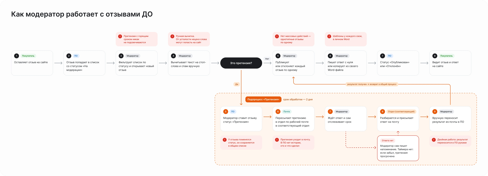
Текущая схема процесса модерации отзыва
Бенчмарк
Изучила админки сервисов отзывов Aplaut, Revvy и др. Составила список фичей, которые будут полезны нашему сервису для закрытия вышеназванных болей и проблем: шаблоны ответов, статусы, автопроверку текста. Отказались с командой от подключения AI для написания шаблонов и автоматической модерации, потому что на данном этапе это сложно технически реализовать
Приоритизация требований
Приоритизировала требования вместе с продактом по соотношению усилий и эффекта
Итог:
5 пунктов от заказчика вошли в релиз 1
2 пункта — в релиз 2
1 пункт заменили на более простое решение
+4 функции добавили по итогам Discovery
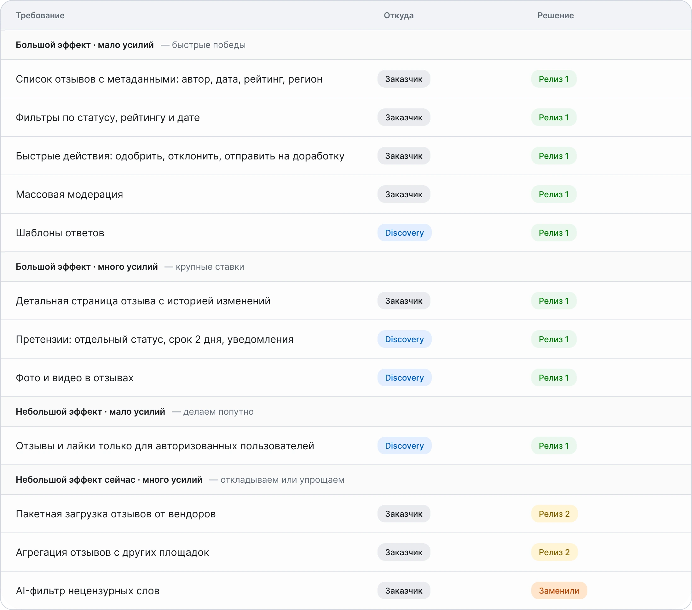
Приоритизация требований
Гипотезы
Для модератора:
1.Если собрать в одной карточке отзыв, данные автора и быстрые действия, обработка одного отзыва займёт меньше времени. Проверим по среднему времени обработки
2.Если система сама подсветит стоп-слова, модератор реже пропустит нецензурный отзыв. Проверим по числу отзывов, снятых после публикации
3.Если у претензий будет отдельный статус, таймер и уведомления, просрочек станет меньше. Проверим по доле претензий, закрытых за 2 дня
Для покупателя:
4.Если показывать фото и видео в карусели, покупатель быстрее решится на покупку. Проверим по конверсии в корзину у товаров с фото-отзывами
5.Если писать отзывы и ставить лайки смогут только авторизованные пользователи, отзывам будут больше доверять. Риск: отзывов станет меньше. Проверим по числу отзывов в месяц
6.Если подтягивать отзывы с других площадок, у товаров станет больше отзывов. Проверим по среднему числу отзывов на товар
Дизайн-решение
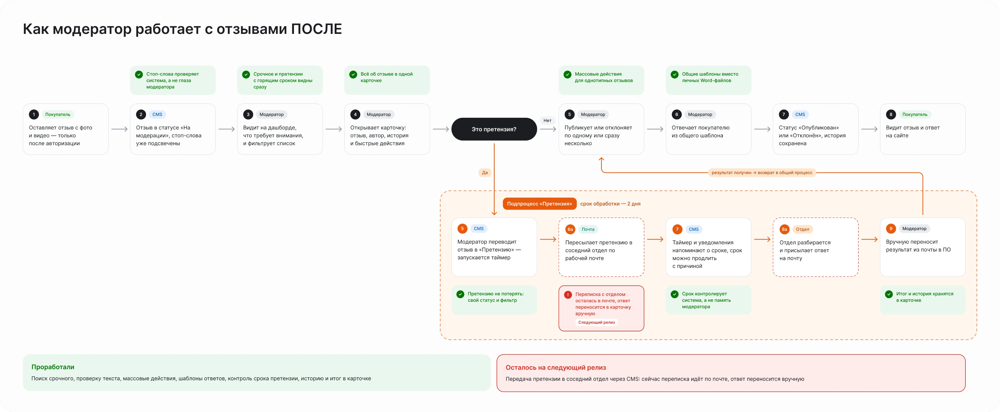
Новая схема процесса модерации отзыва в CMS
1.
Страница со списком отзывов
Модератор видит все отзывы с автором, датой, оценкой и регионом. Фильтрует по статусу, оценке и дате, ищет конкретный отзыв. Одобряет или отклоняет сразу несколько отзывов. Отсюда же переходит к шаблонам ответов, пакетной загрузке и правилам проверки
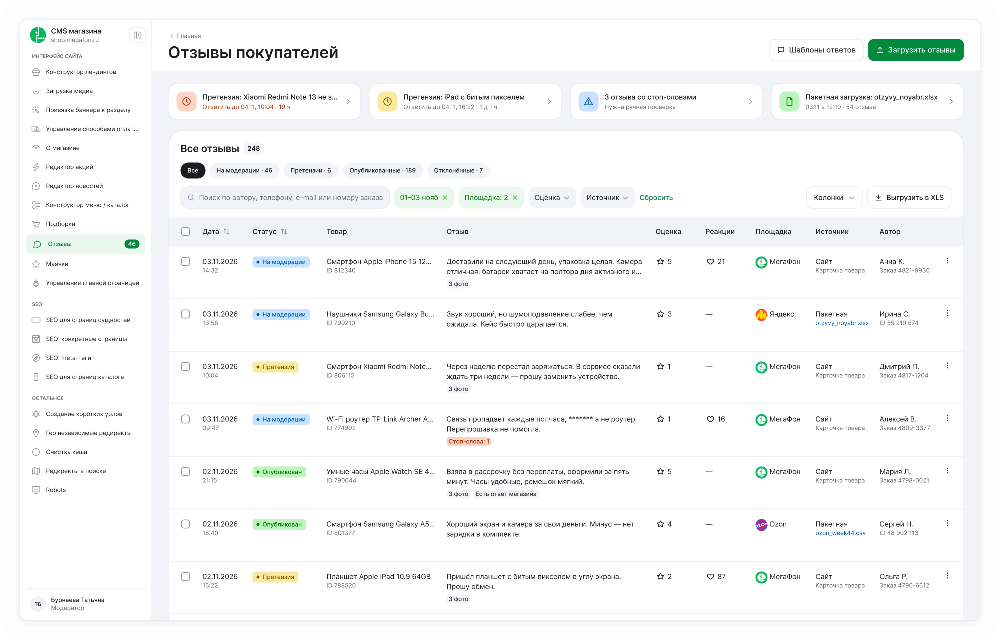
CMS. Раздел «Отзывы» — стартовая страница
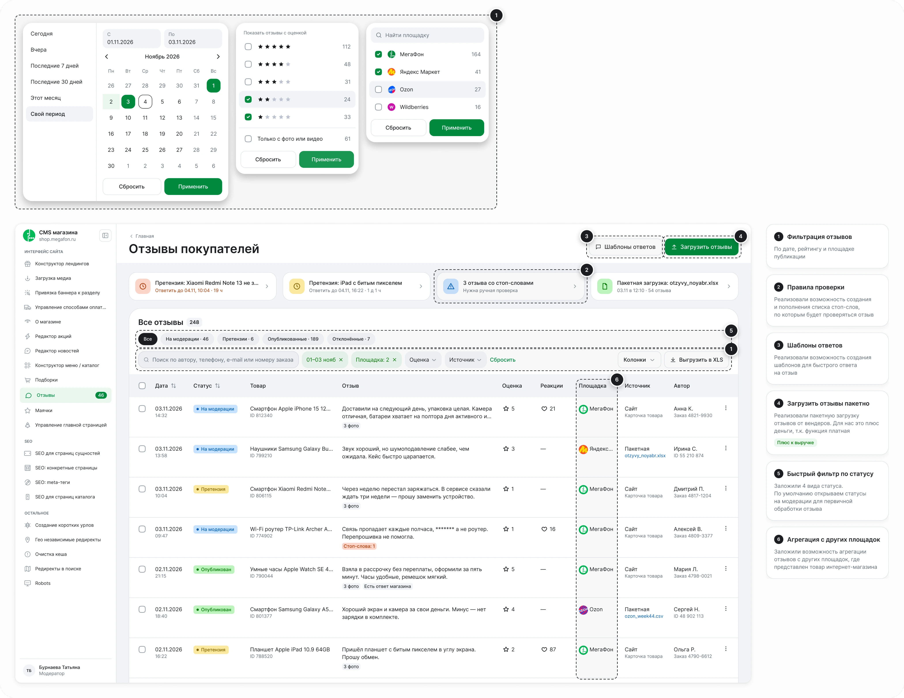
Описание функций на странице
2.
Детальная карточка отзыва
Здесь отзыв можно опубликовать на сайте, отклонить или перевести в претензию. Модератор видит информацию по отзыву и отправителю. Также можно перейти в режим редактирования, проверки отзыва и отправить ответ пользователю: написать самостоятельно или выбрать ответ из шаблона
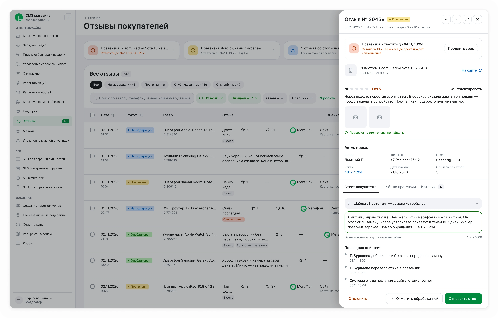
Детальная карточка отзыва
3.Действия с отзывом
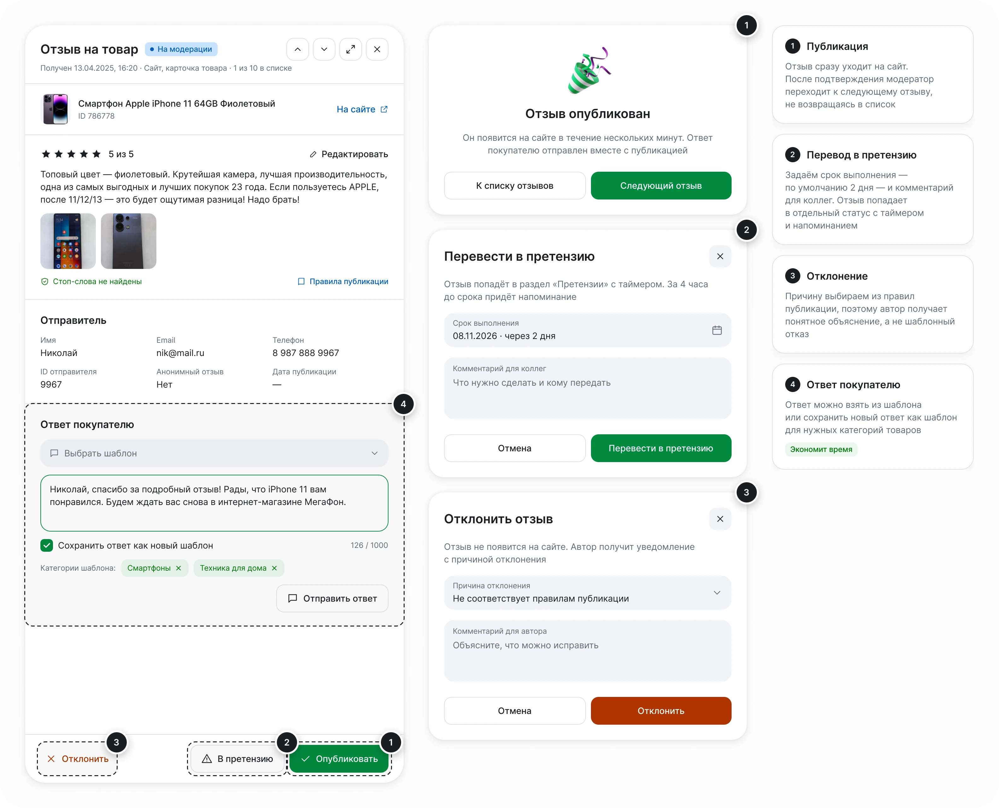
4.
Режим редактирования отзыва
Здесь модератор может вручную отредактировать текст отзыва, удалить фото. А также проверить текст на стоп-слова (нецензурные)
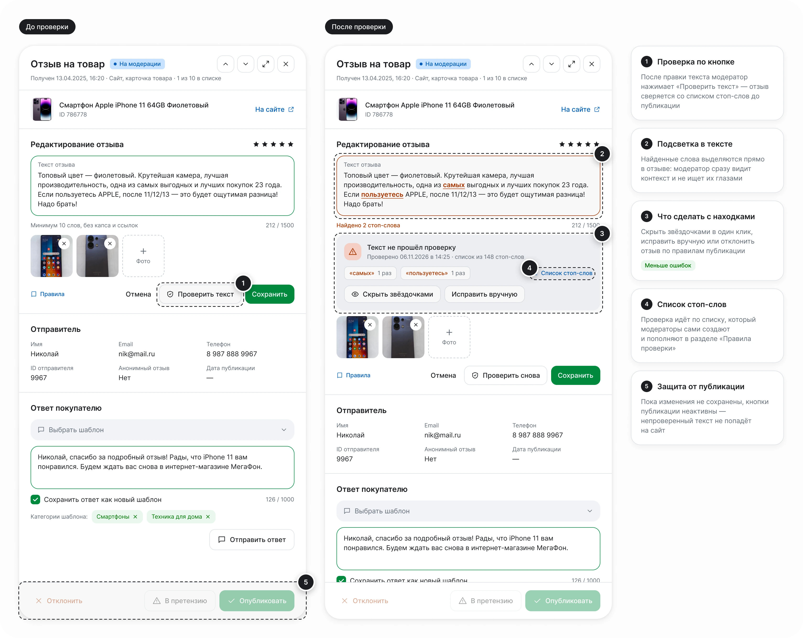
5.
Работа с претензионным отзывом
Раньше претензия терялась среди отзывов, а срок модератор держал в голове. Теперь у претензии свой статус и быстрый фильтр, а претензии с горящим сроком выводятся наверх списка. В карточке видно ответственного и сколько времени осталось до конца срока SLA — 2 дня. Срок можно продлить с причиной, а итог работы зафиксировать отчётом. Переписка с отделом, который разбирает претензию, пока остаётся в почте — это следующий шаг развития
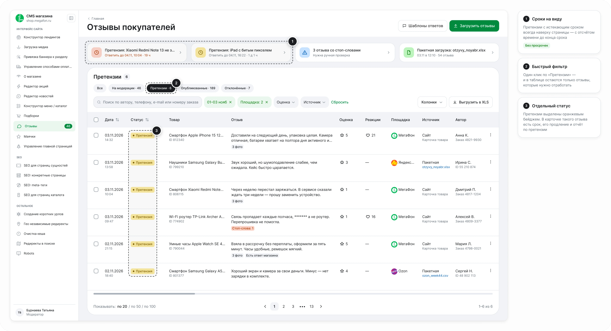
Отображение претензий
Боль
Решение
Сделано
01Претензию не видно
Отдельный оранжевый статус, быстрый фильтр «Претензия», карточки претензий с горящим сроком наверху списка
✅ да
02Срок в голове
В карточке «Ответить до… · осталось 1 д 2 ч», уведомления, продление срока с причиной, которая сохраняется в истории
✅ да
03Нет истории и итога
История статусов и «Отчёт по претензии»: итог работы и вложения, после сохранения статус «Обработан»
✅ да
04Пересылка в отдел по почте
Передача претензии в другой отдел через CMS
❌ нет, проработаем на следующих этапах
Что решено из проблем
6.
Работа с претензионным отзывом в карточке
У такого отзыва можно продлить срок обработки. Также модератор может оставить отчёт о проделанной работе по претензии
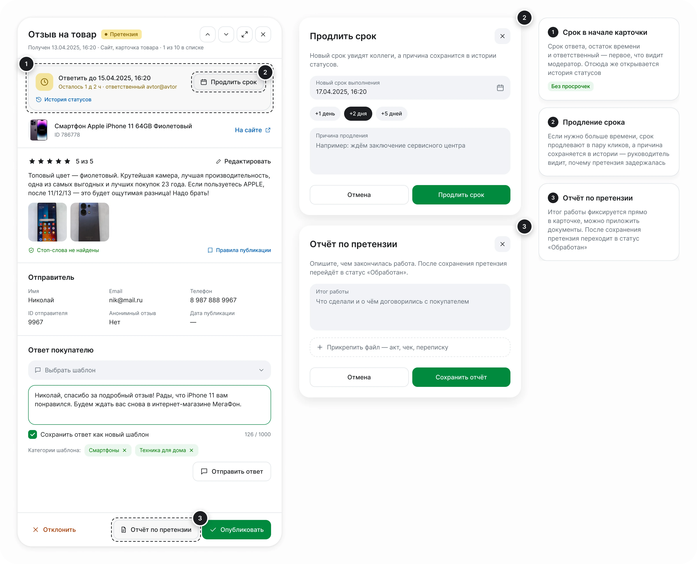
Действия с претензионным отзывом
7.
Отзыв на сайте
В рамках проектирования админки отрисовала изменения раздела отзывов на сайте интернет-магазина. Добавили:
карусель с фото и видео, что приведёт к ускорению принятия решения по покупке
агрегацию отзывов (на интерфейсе показываем площадку публикации отзыва), что приведёт к увеличению количества отзывов. Большее количество отзывов вызывает доверие к товару у пользователей
разрешили оставлять отзывы и лайки только авторизованным пользователям. Данное решение повысит доверие к отзывам на сайте в целом
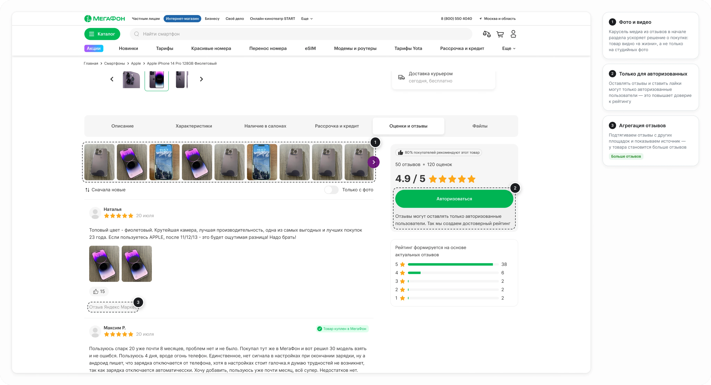
Раздел отзывов в карточке товара на сайте
Ожидаемые результаты (проект в разработке)
Снижение затрат на модерацию за счёт ускорения обработки отзыва
Снижение количества просроченных претензий
Увеличение показателя NPS модератора
Что дальше
Перенести передачу претензии в другой отдел в CMS: модератор передаёт претензию в один клик, отдел отвечает прямо в карточке, а результат не нужно переносить из почты вручную